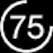

Philip Wong (pw5a29)
Welcome to my personal website
iOS developer - iOS 8.4 iPhone 5S
Speed Intensifier
This tweak speeds up system animations.
Works from iOS 4 - iOS 8.4. Comes with 4 different modes: Simple, Fusion, Advanced and App.
Simple - Uses Apple native animation speed settings, only speeds up springboard.
Advanced - Speed up your whole device from sliders to apps, may face buggy animation.
Fusion - Uses Apple native animation settings for springboard, and custom advanced animation for applications, higher compatibility with other tweaks than Advanced.
App - Uses custom advanced animation, only applies in app
Settings configured in the settings app.
-
Live Battery Indicator
Replaces default battery icon with a circular battery indicator.
Comes with several themes. Current version requires Alkaline, works on iOS 7 - iOS 8.4. Seperate package available for iOS 6.
-
Speedy Homey

Eliminates double tapping of home button to speed up response time invoking the home button.
Works on iOS 7 - iOS 8. Recommended to install Activator, or tweaks which invoke multitasking with gestures.
-
Actual Battery
Measures the remaining battery with different algorithms. Comes with 3 options.
Actual/Actual - Divides the true remaining battery with the true max capacity
Actual/Designed - Divides the true remaining battery with the default designed capacity
Stock - Apple's default curve battery measurement
Copyright 2015 - All Rights Reserved - Philip Wong